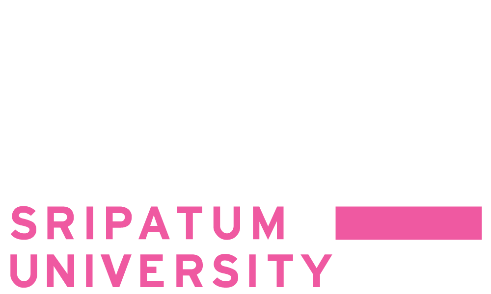

PRATAN NILSON

My name is Mr. Pratarn Nilson, and I am 18 years old. I was born on March 22, 2005. I reside at 32 Soi Watcharapol 1/10, Tha Rang Subdistrict, Bang Khen District, Bangkok, Thailand. You can contact me via email at sayhixdd@gmail.com or by phone at 092-249-9437.

Since I was a young child, my interest in programming and computer systems has never waned. It all began during my elementary school years when my grandfather bought a computer for my older sister to use for her work. This opened the door for me to have regular access to computers, which has continued to this day. My passion for programming has remained constant throughout. It was during my middle school years that I decided to seriously delve into the world of coding. I started by enrolling in online courses to grasp the fundamentals of programming through self-study. I gained a profound understanding of the basics and principles of programming, which I now consider second nature. Upon completing my secondary education, I made the decision to pursue higher education at Sripatum University. I chose to enter the Faculty of Information Technology, majoring in Computer Science and Software Development Innovation. This marks a significant step forward in honing my professional programming skills for the future.
|  |
Bachelor DegreesSripatum University |
2023 - present |
High schoolRattanakosin Sompoch Bangkhen School |
2020 - 2022 | |
junior high schoolRattanakosin Sompoch Bangkhen School |
2017 - 2020 | |
Primary School And KindergartenThairath 75 Chaloem Phrakiat School |
2009 - 2017 |
This program is my first endeavor in Python programming, aimed at simplifying the configuration of the game Ark: Survival Evolved. At that time, this game was my passion, and it served as a major source of inspiration for me to create this program.
This version is an extension of the previous program, an endeavor in using Python to enhance the convenience of configuring Ark: Survival Evolved. It adds functions that allow users to customize the game according to their preferences to a greater extent.
My latest project is a Discord bot developed using Python. It has the capability to retrieve player data from Ark: Survival Evolved game servers and display this information in Discord. Additionally, it can provide additional player-related details. This project represents an application of technology to enhance the efficiency and enjoyment of playing Ark: Survival Evolved and within your Discord community.

This course has been instrumental in developing a comprehensive understanding of Python, from the basics to advanced levels. I've learned the structure and functioning of Python, which I've applied in creating increasingly complex programs. This course has also nurtured a problem-solving mindset and the ability to design well-structured program architectures. The significant takeaway from this course is the capacity to produce impressive, well-informed work based on the knowledge and understanding I've gained
more info
The Complete Python3 Programming course was my first foray into programming, and it provided me with a solid foundation and structured thinking. Beyond that, it prepared me to apply the knowledge gained to develop programs in other languages as well. This course is truly an excellent learning resource for understanding the world of programming and diverse software development.
more info
The Amazing Bot with Autopy course taught me about the Autopy library, which is used to create bots on the computer for added convenience. Autopy is a tool that can control and simulate actions on the computer screen, allowing us to build bots that follow our instructions. This makes computer usage easier and more efficient.
more info
The Web Scraping with Python course provides a comprehensive learning experience about the techniques of extracting data from websites using the Python programming language, in a process known as web scraping. This skill enables us to access data from websites and utilize it for data analysis or the development of other applications efficiently. We learn how to retrieve data from web pages and format it to be suitable for various purposes.
more info
The GitHub for Beginners course teaches me how to use GitHub for collaborative work with others and how to utilize GitHub for uploading projects and related tasks. This course helps me understand the fundamentals of GitHub and working with a team on projects to create an efficient code management system and collaborate effectively.
more info
Participating in Capture The Flag (CTF) competitions related to computer system security has provided me with valuable experience and knowledge in the field of computer security. Through solving challenges and testing various skills related to security and data manipulation, CTF competitions have been an excellent opportunity for learning and enhancing computer security skills.